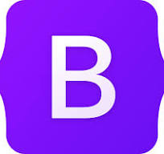

Bootstrap
Bootstrap (formerly Twitter Bootstrap) is a free and open-source CSS framework directed at responsive, mobile-first front-end web development. It contains HTML, CSS and (optionally) JavaScript-based design templates for typography, forms, buttons, navigation, and other interface components.
As of May 2023, Bootstrap is the 17th most starred project (4th most starred library) on GitHub, with over 164,000 stars.[4] According to W3Techs, Bootstrap is used by 19.2% of all websites.[5]

back